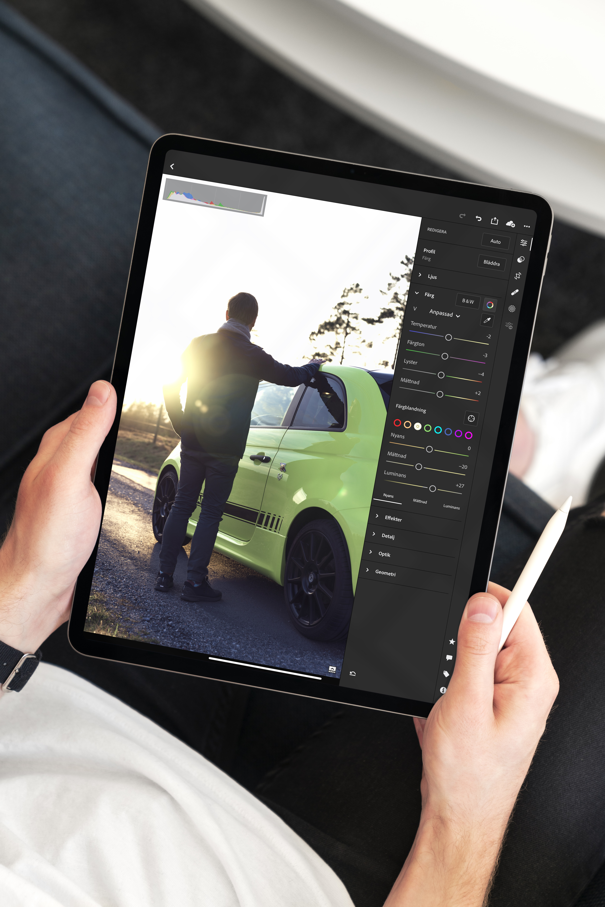

iPad is a line of tablet computers designed, developed and marketed by Apple Inc., which run the iOS and iPadOS mobile operating systems.
The user interface is built around the device's multi-touch screen, including a virtual keyboard. All iPads can connect using Wi-Fi; some models also have cellular connectivity. iPads can shoot video, take photos, play music, and perform Internet functions such as web-browsing and emailing. Other functions – games, reference, GPS navigation, social networking, etc. – can be enabled by downloading and installing apps.